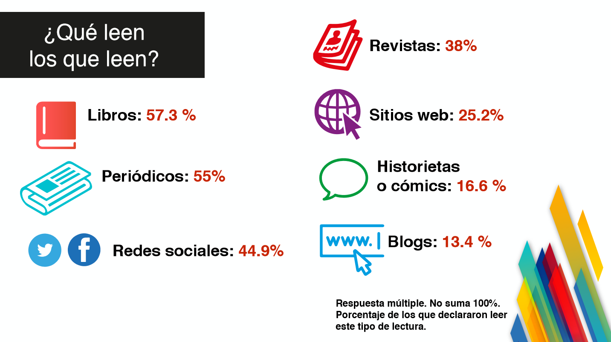
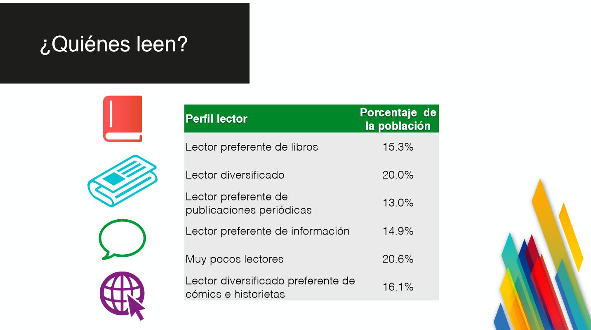

La cifra es inferior a la registrada en otras naciones de la región, como Chile, donde se leen 5.4 libros al año; Argentina, con promedio de 4.6; Colombia, 4.1; y Brasil, con 4, de acuerdo a “El Libro en Cifras, boletín estadístico del libro en Iberoamérica”, del Centro Regional para el Fomento del Libro en América Latina y el Caribe (CERLALC), publicado en diciembre de 2013.
La cantidad de libros leídos durante los últimos 12 meses en promedio por la población adulta ha fluctuado de 3.9 en mayo de 2015, a 3.7 ejemplares en agosto pasado. En febrero del año anterior se empezó a divulgar el MOLEC, pero hasta la entrega de mayo se incluyó el dato de libros leídos por adulto mayor de 18 años.
De la población alfabeta de 18 años y más que declaró no leer ningún tipo de material considerado por MOLEC, 48.5% argumentó falta de tiempo, mientras que 22.5% expuso la falta de interés como su principal motivo.